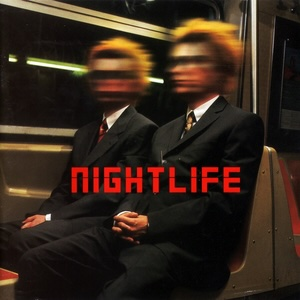

Pet Shop Boys - Nightlife
Nightlife is marked amongst fans of the Pet Shop Boys as a key flop album. After six straight bangers, this was the first fall off. And falling with the quality of the songs was the number of B-sides, which has now been reduced to a meagre few, partially due to the album only having three singles. The first, "I Don't Know What You Want but I Can't Give It Any More", featured three B-sides, although one, a cover of the infamous and practically pornographic 60s number "Je T'Aime… Moi Non Plus", had appeared on the 1998 compilation We Love You before its use as a B-side. The following single, "New York City Boy", featured two B-sides, as did the third single, "You Only Tell Me You Love Me When You're Drunk", although again one of the B-sides of the latter had already been featured on a compilation in 1998, this time Twentieth-Century Blues, which was produced by Neil Tennant of the group.
With only a few B-sides to play with (well, by their standards), we turn to the Further Listening set, which featured two discs of bonus material (it's worth noting that the Further Listening series, which collects bonus tracks from the eras of each PSB album, has been released in two halves: one from Please to Bilingual in 2001, and the other from Nightlife to Elysium in 2017, so we're now dealing with probably a different team and style of compiling). Nightlife is a sorta-concept album, and is largely made up of songs which the boys had been writing for their upcoming musical, Closer to Heaven, which would premiere in 2001. Three songs would both appear on this album and in the musical. The Further Listening set contains a number of PSB versions of songs which would end up in the musical (where they would be sung by other singers), including "For All of Us", "Call Me Old-Fashioned", "Friendly Fire" and "Positive Role Model". I have decided to include the first two, but not the latter two, simply because the studio versions of the latter two songs were released before the Further Listening set (as a B-side of a later album's single for the former and for the latter on 2003's Disco 3, a compilation related to the follow-up album to this, Release). Two further songs, "Nightlife" (yes the title track was cut from the album) and "Somebody Else's Business" are also not going to be included here because they were similarly released after the fact (again as a B-side of a later album's single for the former and on Disco 3 for the latter). And finally, two songs which are exclusive to the Further Listening set, the heavy "Playing in the Streets" and comedic "Tall Thin Men" (the latter being originally intended as the prelude to the musical) will be included. As for remixes, the French version of "New York City Boy", aptly titled "Paris City Boy", and the PSB Extension of "I Don't Know What You Want but I Can't Give It Any More" from the set are also going to be included here. Interestingly, the former was created for the 2003 greatest hits album PopArt (in particular, the French edition), but despite the release date I'm still putting it on here since it's a remix of an album track. In addition, the slow version of "Closer to Heaven", from a 2001 promotional CD for the musical, will be included also. The David Morales remixes of "I Don't Know What You Want but I Can't Give It Any More" will not be included, despite Morales producing the track, simply because there isn't enough room.
And finally, if you're looking at that Further Listening set and following along to judge me, you may have noticed that this set is missing two songs, the Elton John duet "Believe/Song for Guy", from a September 1997 TV show performance, and December 1997's "It Doesn't Often Snow at Christmas". Well, they are both missing here because I think they are from the Bilingual era, the last official release from which was the album's special edition, featuring "Somewhere", in July 1997. This album being released in September 1999, I feel that these two songs are more Bilingual tracks than they are Nightlife ones. Yes, I am really saying I know the Pet Shop Boys' eras better than they do, what are you gonna do about it?! My one counter-argument is that considering the Nightlife Further Listening set was compiled sixteen years after the Bilingual one, and had an extra CD to play with, perhaps the boys decided to include the two songs because they didn't have the chance to (or forgot to) do so on Bilingual. "It Doesn't Often Snow at Christmas" is on my Bilingual set, while "Believe/Song for Guy", being exclusively released on the Nightlife Further Listening set, is on neither my Bilingual set (because there's no room and I didn't realise it existed while making the set) nor the Nightlife set. So, it's kind of in limbo. Oops.
CD 2
| No. | Title | Original release | Length |
|---|---|---|---|
| 1 | Silver Age | "I Don't Know What You Want but I Can't Give It Any More" single, 1999 | 3:32 |
| 2 | Screaming | 4:54 | |
| 3 | Je T'Aime… Moi Non Plus (with Sam Taylor-Wood) | We Love You compilation, 1998 | 4:14 |
| 4 | The Ghost of Myself | "New York City Boy" single, 1999 | 4:03 |
| 5 | Casting a Shadow | 4:37 | |
| 6 | Lies | "You Only Tell Me You Love Me When You're Drunk" single, 2000 | 4:42 |
| 7 | Sail Away | Twentieth-Century Blues compilation, 1998 | 4:33 |
| 8 | Playing in the Streets | Nightlife/Further Listening compilation, 2017 | 3:23 |
| 9 | Tall Thin Men | 2:14 | |
| 10 | Call Me Old-Fashioned (Demo) | 3:58 | |
| 11 | For All of Us | 4:23 | |
| 12 | Closer to Heaven (Slow Version) | Songs from the Musical 'Closer to Heaven' promo CD, 2001 | 6:30 |
| 13 | I Don't Know What You Want but I Can't Give It Any More (The PSB Extension) | "I Don't Know What You Want but I Can't Give It Any More" single, 1999 | 8:39 |
| 14 | Paris City Boy | PopArt: The Hits compilation (French edition), 2003 | 5:17 |
| 75:58 |

Released: 8 October 1999
Length: 52:02
Genre: Synth-pop, dance-pop, trance
Personal rating: 8 / 10
Favourite song: "For Your Own Good"
- "For Your Own Good" – 4:17
- "Closer to Heaven" – 4:29
- "I Don't Know What You What but I Can't Give It Any More" – 4:48
- "Happiness is an Option" – 3:39
- "You Only Tell Me You Love Me When You're Drunk" – 4:19
- "Vampires" – 3:32
- "Radiophonic" – 4:02
- "The Only One" – 5:33
- "Boy Strange" – 4:55
- "In Denial" (with Kylie Minogue) – 3:50
- "New York City Boy" – 4:23
- "Footsteps" – 3:32